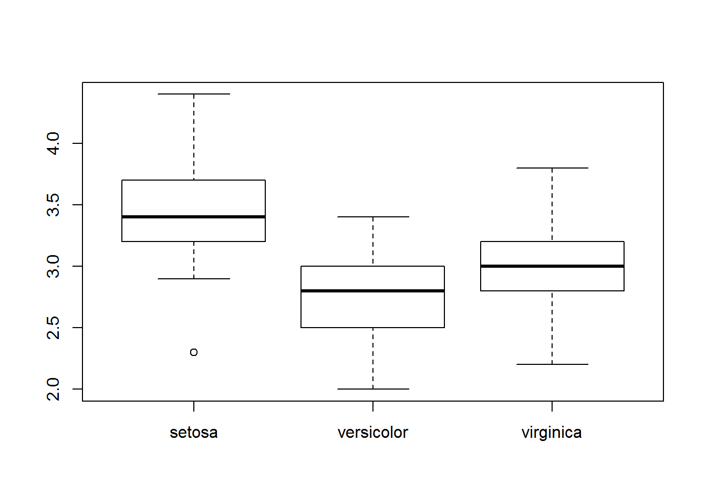

Introduction to programming in R
Introduction
Welcome to programming in R. This script will serve as a tutorial to help you get aquainted with the R programming environment, and get you started with some basic tools and information that will help you along your way. Like any language, the learning curve for R is steep (like a cliff, not a hill), but once you get the hang of it you can learn a lot really quickly. Cheat sheets like this one (or these ones) can help you along the way by serving as miniature reference manuals.
Programming conventions
There are a lot of different ways to write computer code. Each has pros and cons and ALL of them are intended to increase efficiency and readability. For example, you’ll notice that none of my code goes beyond a certain vertical line in the editor. That is to make it so that people don’t have to scroll over to the right of the editor to see what I have written when I hand off my code. There is no “right” way to edit your code, but it will make your life easier if you find a style you like and stick to those conventions.
First, We can comment code to help us out.
# This is a comment. We know because it is preceded by a hashtag, or 'octothorpe'There are different ways to comment code in different languages. We use comments to make clear what we have done by leaving a written record behind.
Second, There are a few ways to run a line of code:
Go the front of a line and press ctrl + Enter
Highlight a chunk of code and press one of the above combinations
Either 1 or 2, but press the ‘Run’ button at the top of this source file to run the code block.
Once you’ve run a code block you can change it and then press the button next to ‘Run’ (or ctrl+shift+p) to ‘re-run’ the previous block of code
Section breaks help organization
I like to use the built-in heading. It works really well for code-folding in R and when I’ve written a script that is several hundred lines long, some times all I want to see are the section headings. Go ahead and type the code below into a source file. Press the upside-down triangle to the right of the line number to see what it does.
# Section heading -----
# Follow a comment with five dashes to insert a section headingStricter R programming rules:
All code is in R is case sensitive
# Example (run the following lines):
a = 1
A = 2
a == A## [1] FALSEA few things going on here.
We’ve defined a couple of variables for the first time. A lot of folks insist that you should use
<-instead of=when you define variables (and they are probably correct), but for our purposes it will make absolutely no difference, and=is much faster to type than<-.Note that the two objects are not the same, and R knows this.
The
==that we typed is a logical test that checks to see if the two objects are identical. If they were, then it would have returned aTRUEinstead ofFALSE. This ‘operator’ is very useful, and is common in a number of languages.
You can’t start an object name with a number, but you can end it with one.
# In Rstudio there are nifty little markers to show this is broken
1a = 1
# This one works (try it by typing 'a1' in the console)
a1 = 1 R will overwrite objects sequentially, so don’t name two things the same, unless you don’t need the first.
a = 1
a = 2
a # a takes on the second value here## [1] 2 print(a) # This is another way to look at the value of an object## [1] 2 show(a) # And, here is one more## [1] 2Some things can be expressed in multiple ways. Both ‘T’ and ‘TRUE’ can be used to indicate a logical that evaluates as being TRUE
T == TRUE## [1] TRUESome names are reserved or pre-defined. Did you notice that R already knew what T and TRUE were? We will talk more about this later in the course if we need to.
For example
in, if, else, for, function()…and a mess of others have special uses
Some symbols are also reserved for special use, like:
*, % %, &, /, <, (, {, [, '', "", ...…and a bunch of others. A lot of these are really useful.
Some other handy coding tricks
The ‘home’ button will move you to the start of the line of code, and to the start of the line if you press it twice.
The ‘end’ button on your keyboard will take you to the end of a line so you can edit code. These will help you move around your code faster.
The ‘tab’ button on your keyboard will move the code to the right some number of spaces (user defined). Pressing SHIFT + Tab will move code to the left. These can help you organize your code.
Single click moves the cursor into position. Double click will highlight the word you are clicking, and a triple left click will highlight an entire line.
Use search and replace functionality to copy big chunks of code and change names as needed. Can also use this to just search your code. PRESS CTRL + F to open the sub menu at the top.
Data structures
Vectors
The first thing you need to know about R is that it’s a statistical programming language. It was designed by stats programmers to be used by stats practitioners. It is not a mathematical language, although it has a lot of math functionality. R is what is known as a “high-level” or “interpreted” programming language. This means the pieces that make it up are a little more intuitive to the average user than most low-level languages like C or C++. The back-end of R is, in fact, a collection of C, C++, Fortran, etc. code that builds up the functionality that we need. This means that R has a broad range of uses, from data management to math, and even GIS and data visualization tools, all of which are conveniently wrapped in an “intuitive”, “user-friendly” language. Translation: you can do a lot pretty easily.
The second thing you need to know about R is that it’s a “vectorized” language Why do you care about that? This will help you wrap your head around how objects are created and stored in R, which will help you understand how to make, access, modify, and combine the data that you will need for any approach to data analysis.
Let’s take a look at how this works and why it matters
a = 1
# Here, we have defined 'a' as a variable with the value of 1...or have we?
a## [1] 1What is the square bracket here? It’s an index. The index is telling us that the first element of ‘a’ is 1. This means that ‘a’ is actually a “Vector”, not a “Scalar”. You can think of a vector as a column in an excel spreadsheet or an analagous data table.
So, even if we define something with a singular value, it is still just a vector with one element (or row if that’s easier).
This is important because of the way that it lets us do math. Even though it is a little difficult to wrap your head around now, it will help us out a lot in the future, and it makes vector operations so easy that we don’t even need to think about them when we start to make statistical models. In terms of programming, it can make a lot of things more intuitive than low-level languages, too.
The vector is the basic building block of life in R. Everything else is either made of vectors, or can be contained within one. Let’s play with some:
‘ATOMIC VECTORS’ can hold one kind of data:
Character Numeric Integer Logical Factor Date/time
Below are some examples of atomic vectors. Run the code to see what it does:
Integers and numerics
a = c(1, 2, 3, 4, 5) # Make a vector of integers 1 through five
print(a) # One way to look at our vector## [1] 1 2 3 4 5 show(a) # Another way to look at it## [1] 1 2 3 4 5 a # A third way to look at it## [1] 1 2 3 4 5 str(a) # We can look at the structure of our vector, integer class## num [1:5] 1 2 3 4 5Think: what is an integer? This will be important down the road when we start to look at discrete vs. continuous probability distributions.
a = seq(1:5) # Another way to make the same vector
a # Print the vector to the console## [1] 1 2 3 4 5 str(a) # Look at the data structure## int [1:5] 1 2 3 4 5 a = seq(from=8, to=13, by=1) # This is the long-hand; easier to understand
str(a) # Notice when we make the vector this way it is 'numeric'## num [1:6] 8 9 10 11 12 13Again, think: what is the difference between numeric and integer? What is the difference between discrete and continuous scales of measurement?
Characters and factors
Characters are anything that is represented as text strings.
b = c('a', 'b', 'c', 'd', 'e') # Make a character vector
b # Print it to the console## [1] "a" "b" "c" "d" "e" str(b) # Now it's a character vector## chr [1:5] "a" "b" "c" "d" "e" b = as.factor(b) # But we can change that if we want
b # What does that mean???## [1] a b c d e
## Levels: a b c d e str(b) # Look at the data structure for more info## Factor w/ 5 levels "a","b","c","d",..: 1 2 3 4 5Factors are a special kind of data type in R that we may run across from time to time. They have ‘levels’ that can be ordered numerically. This is not really important except that it becomes really useful for coding variables used in matrices for statistical models- R does most of this behind the scenes and we won’t have to worry about it for the most part. In fact, in a lot of cases we will want to change factor vectors to character class so they are easier to manipulate.
as.numeric(b) # This is what it looks like when we code a factor as number
?as.numeric # BTW: we can ask R what functions mean like this...
# And not just functions: we can ask it about pretty much
# any built-in object. REMEMBER THIS.Logical vectors
c <- a == b # Most of our logicals will be yes/no or comparisons
c # The '==' compares our numeric vector to the factor one## [1] FALSE FALSE FALSE FALSE FALSE FALSE str(c) # We now have a logical vector## logi [1:6] FALSE FALSE FALSE FALSE FALSE FALSE is.na(a) # We can check for missing values## [1] FALSE FALSE FALSE FALSE FALSE FALSE is.finite(a) # We can make sure that all values are finite## [1] TRUE TRUE TRUE TRUE TRUE TRUE !is.na(a) # The exclamation point means 'not' and is a logical operator## [1] TRUE TRUE TRUE TRUE TRUE TRUE a == 3 # We can see if specific elements of a vector meet a criterion## [1] FALSE FALSE FALSE FALSE FALSE FALSE unique(b) # We can just look at uniue values## [1] a b c d e
## Levels: a b c d eVectors only hold one data type
d = c(1, 'a', 2) # If we try this it converts everything to the lowest common denominator. In this case, we can coerce numbers to characters, but there is no way to turn ‘a’ into an integer or numeric class meaningfully…
Vector operations
We can reference specific elements of vectors
a[3] # Here, we are printing the third element of 'a'## [1] 10 b[b=='c'] # Here, we say, print any element of 'b' that is equal to 'c'## [1] c
## Levels: a b c d e which(b=='c') # Or, we can ask which elements equal 'c'## [1] 3We can do elementwise operations…
a * .5 # Multiplication## [1] 4.0 4.5 5.0 5.5 6.0 6.5 a + 100 # Addition## [1] 108 109 110 111 112 113 a - 3 # Subtraction## [1] 5 6 7 8 9 10 a / 2 # Division## [1] 4.0 4.5 5.0 5.5 6.0 6.5 a ^ 2 # Exponentiation## [1] 64 81 100 121 144 169 exp(a) # This is the same as 'e to the...'## [1] 2980.958 8103.084 22026.466 59874.142 162754.791 442413.392 log(a) # Natural logarithm## [1] 2.079442 2.197225 2.302585 2.397895 2.484907 2.564949 log10(a) # Log base 10## [1] 0.9030900 0.9542425 1.0000000 1.0413927 1.0791812 1.1139434 b = as.character(b)
paste(b, 'AAAA', sep='') # We can append text## [1] "aAAAA" "bAAAA" "cAAAA" "dAAAA" "eAAAA" paste('AAAA', b, sep='') # We can do it the other way## [1] "AAAAa" "AAAAb" "AAAAc" "AAAAd" "AAAAe" paste('AAAA', b, sep='--') # Add symbols to separate## [1] "AAAA--a" "AAAA--b" "AAAA--c" "AAAA--d" "AAAA--e" gsub(pattern='c', replacement='AAAA', b) # We can replace text## [1] "a" "b" "AAAA" "d" "e" e = paste('AAAA', b, sep='') # Make a new object
e # Print to console## [1] "AAAAa" "AAAAb" "AAAAc" "AAAAd" "AAAAe" substr(e, start=5, stop=5) # We can strip text (or dates, or times, etc.)## [1] "a" "b" "c" "d" "e"We can check how many elements they have…
length(a) # A has a length of 5, try it and check it## [1] 6 a # Yup, looks about right## [1] 8 9 10 11 12 13Matrices
Matrices are made up of vectors
# We can make matrices by binding vectors that already exist
cbind(a,e)## Warning in cbind(a, e): number of rows of result is not a multiple of
## vector length (arg 2)## a e
## [1,] "8" "AAAAa"
## [2,] "9" "AAAAb"
## [3,] "10" "AAAAc"
## [4,] "11" "AAAAd"
## [5,] "12" "AAAAe"
## [6,] "13" "AAAAa"# Or we can make an empty one to fill
matrix(0, nrow=3, ncol=4)## [,1] [,2] [,3] [,4]
## [1,] 0 0 0 0
## [2,] 0 0 0 0
## [3,] 0 0 0 0# Or we can make one from scratch
mat = matrix(seq(1, 12), ncol=3, nrow=4)
# We can do all of the things we did with vectors to matrices, but now we
# have more than one column, and official 'rows'
ncol(mat) # Number of columns## [1] 3 nrow(mat) # Number of rows## [1] 4 length(mat) # Total number of entries## [1] 12 mat[2, 3] # Value of row 2, column 3## [1] 10 str(mat) # See how no. of rows and columns is defined in data structure?## int [1:4, 1:3] 1 2 3 4 5 6 7 8 9 10 ...# With rows and columns, we can assign column names and row names. Honestly,
# we will almost never use these but you may come across it elsewhere
colnames(mat) = c('first', 'second', 'third')
rownames(mat) = c('This', 'is', 'a', 'matrix')
mat## first second third
## This 1 5 9
## is 2 6 10
## a 3 7 11
## matrix 4 8 12 str(mat) # Take a look at the data structure and see if you understand## int [1:4, 1:3] 1 2 3 4 5 6 7 8 9 10 ...
## - attr(*, "dimnames")=List of 2
## ..$ : chr [1:4] "This" "is" "a" "matrix"
## ..$ : chr [1:3] "first" "second" "third" mat*2 # All the same operations we did on vectors above...one example## first second third
## This 2 10 18
## is 4 12 20
## a 6 14 22
## matrix 8 16 24More on matrices as we need them. We won’t use these a lot in this course, but R relies heavily on matrices to do linear algebra behind the scene in the models that we will be working with.
Dataframes
Data frames are like matrices, only not. They have a row/column structure like matrices. But, they can hold more than one data type!
Data frames are made up of ‘ATOMIC VECTORS’
This, and the atomic vector, is probably the data structure that we will use most in this course.
Let’s make a dataframe:
a = seq(from=.5, to=10, by = .5) # Make a sequence
b = a^2 # Vector math- raise each 'a' to power of 2
c = rep(c('a','b','c','d'), 5) # Replicates values in object a # of times
d = data.frame(a, b, c) # Note, we don't use quotes for objectsNow we can look at it:
d # Print the dataframe## a b c
## 1 0.5 0.25 a
## 2 1.0 1.00 b
## 3 1.5 2.25 c
## 4 2.0 4.00 d
## 5 2.5 6.25 a
## 6 3.0 9.00 b
## 7 3.5 12.25 c
## 8 4.0 16.00 d
## 9 4.5 20.25 a
## 10 5.0 25.00 b
## 11 5.5 30.25 c
## 12 6.0 36.00 d
## 13 6.5 42.25 a
## 14 7.0 49.00 b
## 15 7.5 56.25 c
## 16 8.0 64.00 d
## 17 8.5 72.25 a
## 18 9.0 81.00 b
## 19 9.5 90.25 c
## 20 10.0 100.00 dNotice that R assigns names to dataframes on the fly based on object names. They are not colnames as with matrices, they are names.
# We can look at these
names(d) # All of the names## [1] "a" "b" "c" names(d)[2] # One at a time: note indexing, names(d) is a vector!!## [1] "b" # We can change the names
names(d) = c('Increment', 'Squared', 'Class') # All at once- note quotes
names(d) # Print it to see what this does## [1] "Increment" "Squared" "Class" names(d)[3] = 'Letter' # Or, one at a time..
names(d) # Print it again to see what changed## [1] "Increment" "Squared" "Letter" e = d # We can also rename the entire dataframe
head(e) # This will show us the first six rows of a dataframe## Increment Squared Letter
## 1 0.5 0.25 a
## 2 1.0 1.00 b
## 3 1.5 2.25 c
## 4 2.0 4.00 d
## 5 2.5 6.25 a
## 6 3.0 9.00 b head(e, 10) # Or, we can look at any other number that we want## Increment Squared Letter
## 1 0.5 0.25 a
## 2 1.0 1.00 b
## 3 1.5 2.25 c
## 4 2.0 4.00 d
## 5 2.5 6.25 a
## 6 3.0 9.00 b
## 7 3.5 12.25 c
## 8 4.0 16.00 d
## 9 4.5 20.25 a
## 10 5.0 25.00 b e$Sqrt = sqrt(e$Increment)
e # We can make new columns in data frames really easily like this!## Increment Squared Letter Sqrt
## 1 0.5 0.25 a 0.7071068
## 2 1.0 1.00 b 1.0000000
## 3 1.5 2.25 c 1.2247449
## 4 2.0 4.00 d 1.4142136
## 5 2.5 6.25 a 1.5811388
## 6 3.0 9.00 b 1.7320508
## 7 3.5 12.25 c 1.8708287
## 8 4.0 16.00 d 2.0000000
## 9 4.5 20.25 a 2.1213203
## 10 5.0 25.00 b 2.2360680
## 11 5.5 30.25 c 2.3452079
## 12 6.0 36.00 d 2.4494897
## 13 6.5 42.25 a 2.5495098
## 14 7.0 49.00 b 2.6457513
## 15 7.5 56.25 c 2.7386128
## 16 8.0 64.00 d 2.8284271
## 17 8.5 72.25 a 2.9154759
## 18 9.0 81.00 b 3.0000000
## 19 9.5 90.25 c 3.0822070
## 20 10.0 100.00 d 3.1622777Looking at specific elements of a dataframe is similar to a matrix, with some added capabilities. We’ll do this with some real data so it’s more fun. Most of the packages in R have built in data sets that we can use for examples. Let’s start by looking at the Iris data.
data('iris') # This is how you load built-in data sets
ls() # We can use ls() to see what is in our environment## [1] "a" "A" "b" "c" "d" "e" "iris" "mat" head(iris) # Look at the first six rows of data in the object## Sepal.Length Sepal.Width Petal.Length Petal.Width Species
## 1 5.1 3.5 1.4 0.2 setosa
## 2 4.9 3.0 1.4 0.2 setosa
## 3 4.7 3.2 1.3 0.2 setosa
## 4 4.6 3.1 1.5 0.2 setosa
## 5 5.0 3.6 1.4 0.2 setosa
## 6 5.4 3.9 1.7 0.4 setosa nrow(iris) # How many rows does it have?## [1] 150 ncol(iris) # How many columns?## [1] 5 names(iris) # What are the column names?## [1] "Sepal.Length" "Sepal.Width" "Petal.Length" "Petal.Width"
## [5] "Species" str(iris) # Have a look at the data structure- tells us all of the above## 'data.frame': 150 obs. of 5 variables:
## $ Sepal.Length: num 5.1 4.9 4.7 4.6 5 5.4 4.6 5 4.4 4.9 ...
## $ Sepal.Width : num 3.5 3 3.2 3.1 3.6 3.9 3.4 3.4 2.9 3.1 ...
## $ Petal.Length: num 1.4 1.4 1.3 1.5 1.4 1.7 1.4 1.5 1.4 1.5 ...
## $ Petal.Width : num 0.2 0.2 0.2 0.2 0.2 0.4 0.3 0.2 0.2 0.1 ...
## $ Species : Factor w/ 3 levels "setosa","versicolor",..: 1 1 1 1 1 1 1 1 1 1 ... summary(iris) # Summarize the variables in the dataframe## Sepal.Length Sepal.Width Petal.Length Petal.Width
## Min. :4.300 Min. :2.000 Min. :1.000 Min. :0.100
## 1st Qu.:5.100 1st Qu.:2.800 1st Qu.:1.600 1st Qu.:0.300
## Median :5.800 Median :3.000 Median :4.350 Median :1.300
## Mean :5.843 Mean :3.057 Mean :3.758 Mean :1.199
## 3rd Qu.:6.400 3rd Qu.:3.300 3rd Qu.:5.100 3rd Qu.:1.800
## Max. :7.900 Max. :4.400 Max. :6.900 Max. :2.500
## Species
## setosa :50
## versicolor:50
## virginica :50
##
##
## # Now let's look at some specific things
# What is the value in 12th row of the 4th column of iris?
iris[12, 4]## [1] 0.2 # What is the mean sepal length among all species in iris?
mean(iris$Sepal.Length)## [1] 5.843333 # What about the mean sepal length just for setosa?
# A couple of new things going on here:
# 1. We can refer to the columns as atomic vectors within the dataframe if
# we want to. Some times we have to do this...
# 2. Note the logical check for species
# 3. What we are saying here is:
# "Show me the mean of the column Sepal.Length in the dataframe iris
# where the species name is setosa"
mean(iris$Sepal.Length[iris$Species=='setosa'])## [1] 5.006 # We can write this out longhand to make sure it's correct (it is)
logicalCheck = iris$Species == 'setosa'
lengthCheck = iris$Sepal.Length[iris$Species=='setosa']
# We can also look at the whole dataframe just for setosa
setosaData = iris[iris$Species=='setosa' , ]
# Note that the structure of species is preserved as a factor with three
# levels even though setosa is the only species name in the new df
str(setosaData)## 'data.frame': 50 obs. of 5 variables:
## $ Sepal.Length: num 5.1 4.9 4.7 4.6 5 5.4 4.6 5 4.4 4.9 ...
## $ Sepal.Width : num 3.5 3 3.2 3.1 3.6 3.9 3.4 3.4 2.9 3.1 ...
## $ Petal.Length: num 1.4 1.4 1.3 1.5 1.4 1.7 1.4 1.5 1.4 1.5 ...
## $ Petal.Width : num 0.2 0.2 0.2 0.2 0.2 0.4 0.3 0.2 0.2 0.1 ...
## $ Species : Factor w/ 3 levels "setosa","versicolor",..: 1 1 1 1 1 1 1 1 1 1 ... # Some quick plotting code
# Once we have a nice dataframe like these ones, we can actually step into
# The world of exploratory analyses.
hist(setosaData$Sepal.Length) # Make a histogram of sepal lengths
plot(setosaData$Sepal.Width, setosaData$Sepal.Length) # Bi-plot
boxplot(Sepal.Width~Species, data=iris) # Boxplots
Lists
Lists are the ultimate data type in R. They are actually a vector that can hold different classes of data. Each element of a list can be any kind of object (an atomic vector, a matrix, a dataframe, or even another list!!).
The real, filthy R programming relies heavily on lists. We will have to work with them at some point in this class, but we won’t take a ton of time on them here.
Let’s make a list- just to see how they work
myList = vector(mode='list', length=4)
myList[[1]] = a
myList[[2]] = c
myList[[3]] = mat
myList[[4]] = d
# Print it
myList # Cool, huh?## [[1]]
## [1] 0.5 1.0 1.5 2.0 2.5 3.0 3.5 4.0 4.5 5.0 5.5 6.0 6.5 7.0
## [15] 7.5 8.0 8.5 9.0 9.5 10.0
##
## [[2]]
## [1] "a" "b" "c" "d" "a" "b" "c" "d" "a" "b" "c" "d" "a" "b" "c" "d" "a"
## [18] "b" "c" "d"
##
## [[3]]
## first second third
## This 1 5 9
## is 2 6 10
## a 3 7 11
## matrix 4 8 12
##
## [[4]]
## Increment Squared Letter
## 1 0.5 0.25 a
## 2 1.0 1.00 b
## 3 1.5 2.25 c
## 4 2.0 4.00 d
## 5 2.5 6.25 a
## 6 3.0 9.00 b
## 7 3.5 12.25 c
## 8 4.0 16.00 d
## 9 4.5 20.25 a
## 10 5.0 25.00 b
## 11 5.5 30.25 c
## 12 6.0 36.00 d
## 13 6.5 42.25 a
## 14 7.0 49.00 b
## 15 7.5 56.25 c
## 16 8.0 64.00 d
## 17 8.5 72.25 a
## 18 9.0 81.00 b
## 19 9.5 90.25 c
## 20 10.0 100.00 d names(myList) # No names on the fly like a df## NULL names(myList) = c('a', 'c', 'mat', 'd') # Give it names like a dataframe
myList # See how the names work now?## $a
## [1] 0.5 1.0 1.5 2.0 2.5 3.0 3.5 4.0 4.5 5.0 5.5 6.0 6.5 7.0
## [15] 7.5 8.0 8.5 9.0 9.5 10.0
##
## $c
## [1] "a" "b" "c" "d" "a" "b" "c" "d" "a" "b" "c" "d" "a" "b" "c" "d" "a"
## [18] "b" "c" "d"
##
## $mat
## first second third
## This 1 5 9
## is 2 6 10
## a 3 7 11
## matrix 4 8 12
##
## $d
## Increment Squared Letter
## 1 0.5 0.25 a
## 2 1.0 1.00 b
## 3 1.5 2.25 c
## 4 2.0 4.00 d
## 5 2.5 6.25 a
## 6 3.0 9.00 b
## 7 3.5 12.25 c
## 8 4.0 16.00 d
## 9 4.5 20.25 a
## 10 5.0 25.00 b
## 11 5.5 30.25 c
## 12 6.0 36.00 d
## 13 6.5 42.25 a
## 14 7.0 49.00 b
## 15 7.5 56.25 c
## 16 8.0 64.00 d
## 17 8.5 72.25 a
## 18 9.0 81.00 b
## 19 9.5 90.25 c
## 20 10.0 100.00 d myList[[1]] # We reference these differently [[]]## [1] 0.5 1.0 1.5 2.0 2.5 3.0 3.5 4.0 4.5 5.0 5.5 6.0 6.5 7.0
## [15] 7.5 8.0 8.5 9.0 9.5 10.0 myList[[2]][5] # But can still get into each object## [1] "a" # Play around with the numbers to see what they do!
myList$c[1] # Can also reference it this way!## [1] "a"Very commonly, model objects and output are stored as lists. In fact, most objects that require a large amount of diverse information in R pack it all together in one place using lists, that way we always know where to find it. It seems like a lot to take in now, but will be very useful in the future.
Copyright © 2017 Dan Stich. All rights reserved.